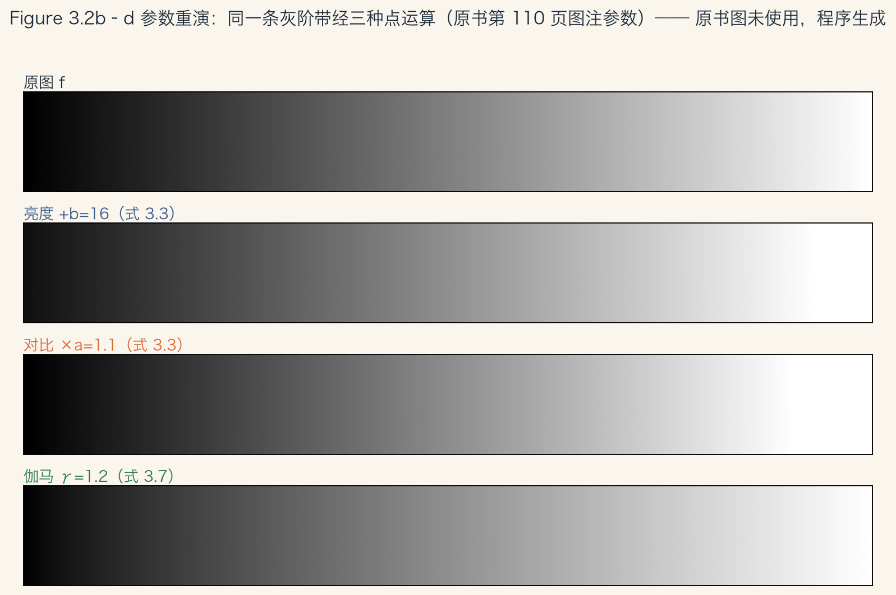
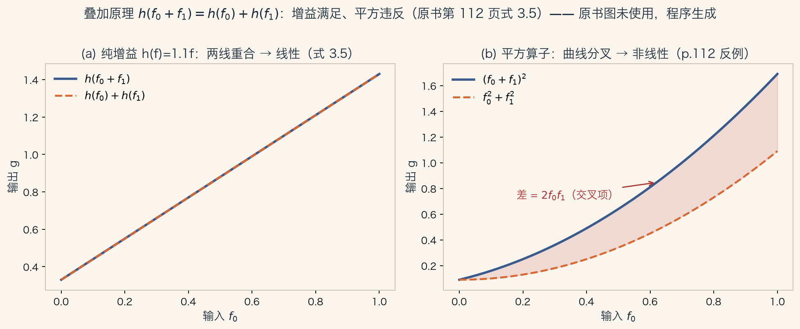
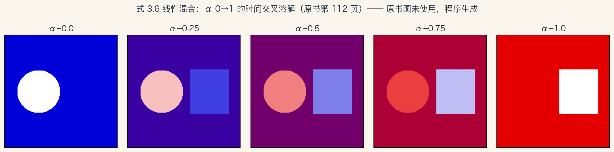
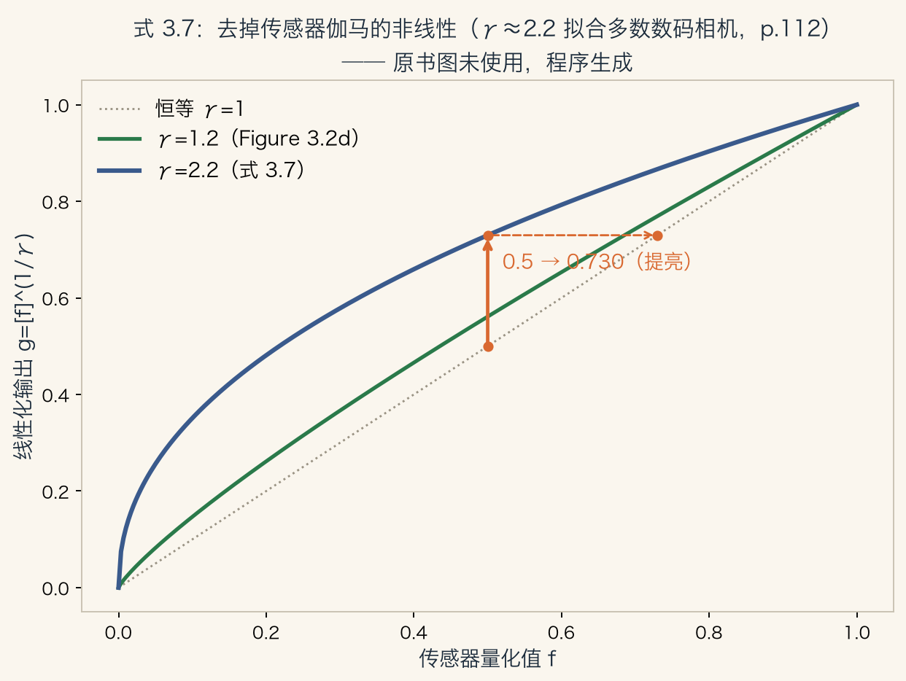
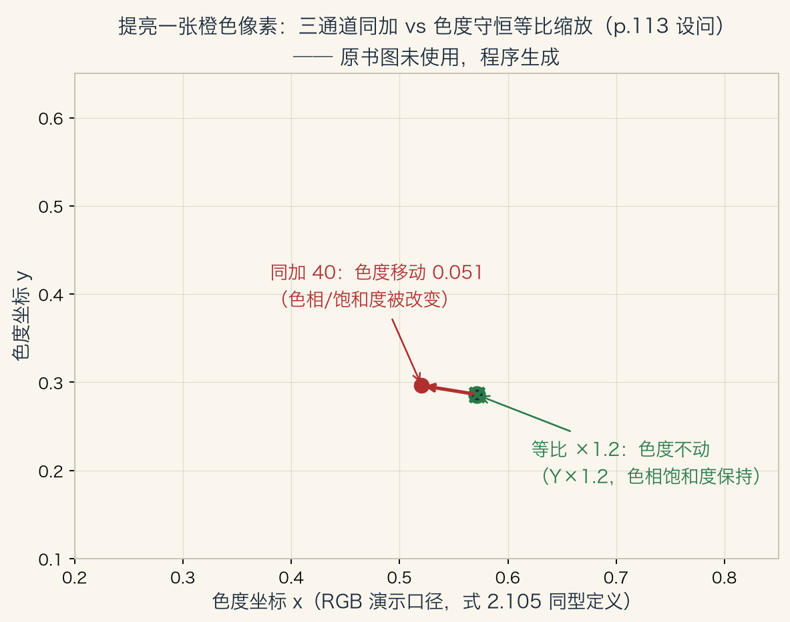
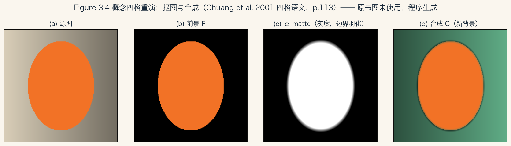
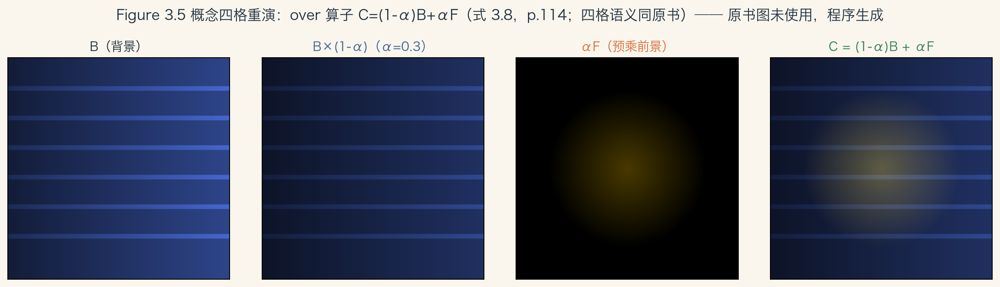

第 3 章 · 图像处理
从点算子开始
图像处理是多数视觉算法的第一步。
常见操作：曝光校正、颜色平衡、降噪、锐化、旋转拉直。
本章五站：点算子、邻域算子、傅里叶、金字塔与小波、几何变换。
经典技术之后，第四章随机场，第五章深度网络。
依据：原书第 109 页
本章五站
点算子：逐像素
邻域算子：看邻居
傅里叶变换
金字塔与小波、几何变换
正课第十三集
01 / 17
点算子 · 三个名字
每个像素各自可算
输出像素只依赖同位置的输入像素。
还可能用到全局收集的参数。
亮度对比度调整、颜色校正都是点算子。
文献里也叫点过程；卷积网络里有时叫 1×1 卷积。
依据：原书第 109–111 页（含第 111 页脚注 1）
同一类操作
点算子 point operators
点过程 point processes
1×1 卷积（有时叫）
正课第十三集
02 / 17
像素变换 · 函数记号
写成函数：g = h(f)
式 3.1：g(x)=h(f(x))，也可以有多个输入。
式 3.2：离散图 g(i,j)=h(f(i,j))。
x 是 D 维坐标，图像通常取二维。
同一张图可看作颜色、数字网格或曲面。
依据：原书第 111 页
g(x) = h(f(x))；g(i,j) = h(f(i,j))
式 3.1 / 3.2，原书第 111 页；x 通常取二维，值可为标量或向量
正课第十三集
03 / 17
增益与偏置
乘一个数，加一个数
式 3.3：g = af + b。
a 叫增益，b 叫偏置，有时被说成管对比度和亮度。
式 3.4：a 和 b 也可以随位置变化。
例子：渐变灰滤镜压暗天空，渐晕建模。
依据：原书第 110–112 页；图参数取自第 110 页图注

灰阶带经 +b=16、×a=1.1、γ=1.2 三种点运算｜程序生成，未用教材或论文原图
正课第十三集
04 / 17
线性的判据
先加后算，等于先算后加
式 3.5：h(f₀+f₁) = h(f₀) + h(f₁)。
全局增益和空间可变增益都满足。
平方用来估计带通信号的局部能量，但不满足叠加。
快速检验：输入翻倍，线性输出也翻倍；平方翻四倍。
依据：原书第 112 页；本集实验

纯增益两线重合，平方算子分叉｜程序生成，未用教材或论文原图
正课第十三集
05 / 17
线性混合
两个输入，按 α 混合
式 3.6：g = (1−α)f₀ + αf₁。
α 从 0 推到 1，就是交叉溶解。
常见于幻灯片和影视转场。
也是图像变形 morphing 的组件。
依据：原书第 112 页；本集实验

α=0 到 1 的五格交叉溶解｜程序生成，未用教材或论文原图
正课第十三集
06 / 17
伽马校正
撤销显示器的非线性映射
式 3.7：g = [f(x)]^(1/γ)。
γ 约 2.2，对多数数码相机是合理拟合。
0.5 提到 0.730；0.05 提到 0.256，约 5.12 倍。
0.8 只提到 0.904，约 1.13 倍：暗部相对提升更大。
依据：原书第 112 页；本集实验

γ=1、1.2、2.2 的提亮曲线，0.5→0.730｜程序生成，未用教材或论文原图
正课第十三集
07 / 17
色彩变换 · 相关性
提亮彩色图，有副作用吗
彩色图通常宜看作高度相关的信号。
它与成像过程、传感器设计、人眼感知紧密相连。
三通道同加常数，不只提升表观强度。
还可能影响色相和饱和度。
依据：原书第 112–113 页
三处相关性
成像过程
传感器设计
人眼感知
正课第十三集
08 / 17
只变亮不变色
先分亮度，再合回 RGB
先算色度坐标（式 2.105）或颜色比率（式 2.117）。
提亮亮度 Y，再重算合法的 RGB。
色相和饱和度保持不变。
三通道同加 40：色度位移 0.0512，Y 恰增 40；等比 ×1.2 时色度不动。
依据：原书第 113 页；本集实验

三通道同加使色度点移动，等比缩放色度不动｜程序生成，未用教材或论文原图
正课第十三集
09 / 17
颜色平衡
白炽灯偏色，两档做法
做法一：每个通道乘不同的增益。
做法二：映射到 XYZ，换白点，再映射回来。
后者可写成线性的 3×3 color twist 矩阵。
同页还有彩虹增强的趣味项目，建议学完本章再做。
依据：原书第 113 页
两条路
逐通道增益（对角矩阵）
XYZ 换白点（3×3 扭转）
趣味项目：Exercise 3.29
正课第十三集
10 / 17
抠图与合成
抠出来，再贴回去
matting：把前景物体从原图里抠出来。
compositing：无痕贴进另一幅图。
α 通道记录每个像素的不透明度或覆盖比例。
不透明度是透明度的反面。
依据：原书第 113–114 页；本集实验

源图、前景、α 边界、合成四格｜程序生成，未用教材或论文原图
正课第十三集
11 / 17
α 的三态
内部实心，外部全透，边界渐变
物体内部 α=1，全不透明。
物体外部 α=0，全透明。
边界在两极之间平滑过渡，藏住锯齿。
图像软件里常把这段过渡叫羽化。
依据：原书第 114 页
α 的取值
α=1：全不透明
α=0：全透明
0<α<1：边界过渡
正课第十三集
12 / 17
over 算子
背景衰减，再叠前景
式 3.8：C = (1−α)B + αF。
背景按 1−α 衰减，再叠上前景颜色与不透明度。
Porter 与 Duff 在 1984 年提出，Blinn 随后深入研究。
α=1 得前景，α=0 得背景，α=0.5 各出一半。
依据：原书第 114 页；本集实验

B、B×(1−α)、αF、C 四格｜程序生成，未用教材或论文原图
正课第十三集
13 / 17
预乘
存 αF，还是存 F
很多场合直接存 αF，叫预乘 premultiplied。
Blinn 在 1994 年论证：预乘 RGBA 更受青睐。
模糊、旋转、重采样时，四个带可独立处理。
例外：局部颜色一致性抠图要用未预乘的纯前景 F。
依据：原书第 114 页
两种存法
预乘 αF：重采样方便
未预乘 F：边缘附近恒定或缓变
存法看下一步操作
正课第十三集
14 / 17
玻璃反射与抠图史
加法合成，以及 α 从哪来
干净玻璃：透射光与反射光直接相加。
相框肖像与反射人脸叠在一起。
这个模型可用于透明运动分析（9.4.2 节）。
抠图史：蓝屏、差分、自然图像抠图，细节在第 10 章第 4 节。
依据：原书第 115 页
两种合成
over：(1−α)B+αF
玻璃反射：直接相加
α 怎么求：留给第 10 章
正课第十三集
15 / 17
回书
一条线串起本集
图像是函数，点算子逐像素套同一个函数。
增益偏置调明暗，线性混合做转场，伽马复原。
色彩变换先分亮度与颜色，合成按 α 加权。
下一站是邻域算子：像素开始看邻居。
依据：原书第 109–115 页
公式清单
3.1–3.2：定义
3.3–3.5：增益、空间可变、叠加
3.6 混合 / 3.7 伽马
3.8：over 算子
正课第十三集
16 / 17
带走 · 作业 · 移交
五件事，三题作业
点算子逐像素独立；增益偏置调明暗。
乘性增益是线性的；色彩变换先分亮度与颜色。
合成靠 over：C=(1−α)B+αF。
下集：直方图均衡，自动确定映射。
依据：原书第 109–115/180/188–189 页
作业三题
Exercise 3.1：颜色平衡
Exercise 3.3：合成与反射
Exercise 3.29：彩虹增强（学完本章再做）
正课第十三集
17 / 17